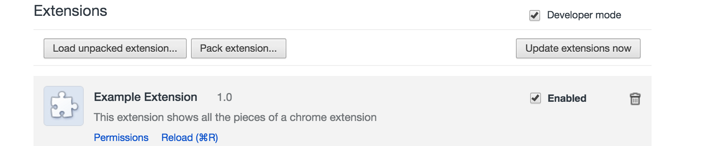

about
syllabus
All example source code
Before I discuss chrome extensions, let’s briefly look at how bookmarklets work. In JavaScript you can define a function like so:
function unicorn() {
alert('unicorn!');
}You can then execute that function like so:
unicorn();Functions in JavaScript, however, can be anonymous.
function() {
alert('unicorn!');
}And if you put that whole anonymous function in parentheses and then add parentheses after it, it’s a “self-executing” function. Meaning it’s called the moment it’s defined.
(function() {
alert('unicorn!');
})();And that is what a bookmarklet is! Here, try dragging this one to you bookmarks bar.
It’s the above javascript code inside an a href element with javascript: in front of the self-executable function.
<a href="javascript:(function(){})()">bookmarklet</a>If your code is complicated and long it’s often simpler to just put it in another JS file and reference it like so:
(function () {
var script = document.createElement('script');
script.src = 'http://shiffman.net/a2z/js/bookmarklet.js';
document.body.appendChild(script);
})();Now try this purpler example which runs the following code (located at http://shiffman.net/a2z/js/bookmarklet.js) to turn all <p> elements pink.
(function() {
var elts = document.getElementsByTagName('p');
for (var i = 0; i < elts.length; i++) {
elts[i].style['background-color'] = '#C0C';
}
})();The advantage of this solution is that is also makes it possible to update the bookmarklet without user’s having to re-add it. There is the problem of browser caching, however, which can usually be addressed with adding a random number or timestamp to the url.
var url = 'http://shiffman.net/a2z/js/bookmarklet.js';
script.src = url + "?" + new Date().getTime();(Note you can get fancier with the above if you want to cache hourly, daily, etc.)
A chrome extension is a way of adding functionality to the chrome browser. You can add interface elements, open and close tabs, interact with the address bar, as well as modify the contents of any page the browser is currently on. The lovely thing for us is that extensions can be built with the same open web tools that we are already using – HTML, CSS, JavaScript.
All chrome extensions require a manifest.json file. This file includes metadata about the extensions, sets its permissions, and references all the JavaScript, CSS, and other files associated with the extension.
Here is an example:
{
"manifest_version": 2,
"name": "My Extension",
"version": "0.1"
}The manifest_version should always be 2 as this is the current manifest specification. Here is the full spec for manifest.json.
The first thing you might try with an extension is making a content script. A content script is a piece of JavaScript code (which can also include and reference CSS) that runs after the page loads. It has full access to the DOM so you can do things like alter content, styles, layout, images, anything that is on the page. The manifest.json file should reference your content script.
{
"manifest_version": 2,
"name": "My Extension",
"version": "0.1",
"content_scripts": [
{
"js": ["content.js"]
}
]
}You also need to specify which URLs the content script should run on. For example for all URLs, you would add:
"content_scripts": [
{
"matches": [
"<all_urls>"
],
"js": ["content.js"]
}
]You can also specify individual unique URLs and using the wildcard * to encompass all paths on a given domain. For example, the following would run the content script on any github.com page:
"content_scripts": [
{
"matches": [
"http://github.com/*",
"https://github.com/*",
"http://*.github.com/*",
"https://*.github.com/*"
],
"js": ["content.js"]
}
]Let’s look at some very basic code that just takes every paragraph element and changes its background color to purple. I’ll use native JavaScript below, but it is possible to use a DOM library like JQuery or p5.
var elts = document.getElementsByTagName('p');
for (var i = 0; i < elts.length; i++) {
elts[i].style['background-color'] = '#F0C';
}By default, Chrome runs the code in the content scripts after the DOM is completely loaded. So there’s no need wrap the code inside a “ready” event.
This is all you need for a working chrome extension! To test the extension, go to the browser’s extension page via chrome://extensions/. Check “Developer mode” and then “Load unpacked extension”. Browse to the directory where you’ve stored your manifest.json and content.js file.

Once the extension is installed you can enable or disable it, as well as delete it. Also note that if you change the code you’ll need to select “reload” before the new code will run.
User interface elements can be added as part of chrome extension via “browser” or “page” actions. A browser action creates a button that lives on the top right of the browser. A page action is an icon that appears in the address bar itself.
Browser and page actions can’t access the DOM itself, however, they can communicate with the content script via the chrome “messaging” API. A browser action should have an icon (for the button) as well as a JavaScript file for the code.
"browser_action": {
"default_icon": "icon.png"
},
"background": {
"scripts": ["background.js"],
}When the user clicks the button, it triggers an “onClick” event. This code would go in background.js.
// Add a listener for the browser action
chrome.browserAction.onClicked.addListener(buttonClicked);
function buttonClicked(tab) {
// The user clicked the button!
// 'tab' is an object with information about the current open tab
}Let’s say you want to execute some code in the content script (to manipulate the DOM) whenever the user triggers the browser action. This is where you need to use “messaging”. A message is just a JavaScript object of your own design that you send from the background script to the content script. Here is the sending:
function buttonClicked(tab) {
var msg = {
message: "user clicked!"
}
chrome.tabs.sendMessage(tab.id, msg);
}And then in the content script you can receive the message and perform an action. Lots of data comes in with the message, but the actual object you sent is in the request variable.
// Listen for messages
chrome.runtime.onMessage.addListener(receiver);
// Callback for when a message is received
function receiver(request, sender, sendResponse) {
if (request.message === "user clicked!") {
// Do something!
}
}The browser action can also trigger a pop-up, which is just an HTML page. For example, you could run a p5 sketch in the pop-up as in this example. To do this, reference the pop-up HTML file in manifest.json.
"browser_action": {
"default_title": "you can also add a tool tip here",
"default_popup": "popup.html"
}The pop-up can also communicate with the content script via messaging. There are two examples that demonstrate this functionality. This first one uses a slider and text field in the pop-up to alter the DOM content. This second one uses text that is selected on the page itself to make an API query. Any JavaScript associated with the pop-up is not triggered unless the user clicks the button. So in the second example, it’s worth noting that the message goes from the content script to the background script. A pop-up can then access variables in the background script. For example if the background script has a variable called word, you would say:
var word = chrome.extension.getBackgroundPage().word;Actions can also be triggered by typing a keyword into the “omnibox” (also known as “address bar”). The keyword is specified in manifest.json.
"omnibox": {
"keyword": "a2z"
}What to do after the user types a2z is handled in the background script.
// This event is fired when the user hits "enter"
chrome.omnibox.onInputEntered.addListener(omniChanged);
function omniChanged(text) {
// The variable "text" has the text the user typed
// You could open a new tab on a specific page that uses that text
// or send a message to a content script
// etc.
}Chrome extensions allow you to replace the default chrome pages for bookmarks, history, and new tab. To replace new tab, for example, add the following to manifest.json.
"chrome_url_overrides": {
"newtab": "newtab.html"
}Then you can create newtab.html with any HTML, CSS, or JavaScript. Here’s an example that picks a random “word of the day” from Wordnik.
One of the benefits of using a chrome extension is all of the APIs that are available for controlling the behavior of the browser. Some that might interest you are: